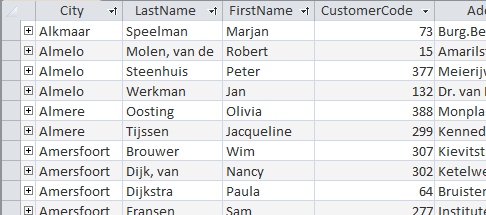

Sort records in ascending or descending order based on one or more
fields.
You can sort the records in a table based on the values in one or more fields.
Sorting can be in ascending and descending order.
In the next steps you need to
change the table Customers so that an overview is created of
first the city, then the last name and then first name. The records must also be
sorted in that order.Figure 1: Table Customers sort on city, last name and first name

Open database candy2016.accdb.
Open the table Customers.
The table Customers is displayed in the Datasheet View.
Select the column City by clicking on the column
header.
Drag the column City to the left so this will be the first
column in the table.
Same way, move the columns LastName and
FirstName to, respectively the 2e and 3e position in the
table.
Sort on one field
Click in column City on the arrow at the right side in the
column header and select from the shortcut menu Sort A to
Z.
Access reorganizes the records in alphabetical order by city and shows a
small upward pointing arrow () at
the right side of the column head to indicate the sort order.
Cancel the sorting through tab Home > Remove Sort (group Sort & Filter) .
Sort on multiple fields
Select the columns City, LastName and
FirstName.
Choose tab Home > Ascending (group Sort
& Filter).
Access reorganizes the records in ascending alphabetical order, first by
city, then by last name and then by first name. At the right side of each of
heads of these three columns you can see the small upward pointing
arrow.
Close the table Customers and
chooseNo on the question to save the changes.

 (group Sort
& Filter).
Access reorganizes the records in ascending alphabetical order, first by city, then by last name and then by first name. At the right side of each of heads of these three columns you can see the small upward pointing arrow.
(group Sort
& Filter).
Access reorganizes the records in ascending alphabetical order, first by city, then by last name and then by first name. At the right side of each of heads of these three columns you can see the small upward pointing arrow.